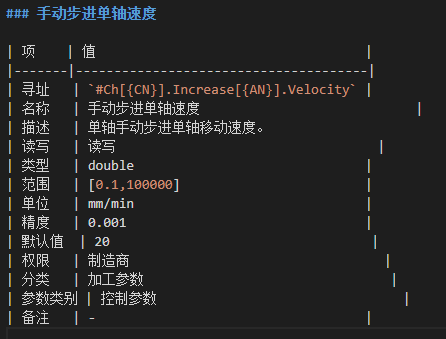

插图&表格
示意图
尺寸
绘制示意图尺寸不要大于700px；
轮廓
轮廓示意图的整体外轮廓无边框；
字体
示意图中的文字规则如下:
中文 思源黑体（Regular） 一般：12pt；特殊：10pt≤X≤18pt
英文 Arial 一般：12pt；特殊：10pt≤X≤18pt
背景
背景设置透明，保存为PNG格式，示意图源文件保存在统一文件夹中;
适应绘图
Visio中，示意图绘制完成时，尺寸设置：选择“设计”-“大小”-“适应绘图”。
示意图尺寸设置正例

示意图尺寸设置反例

边框
绘制示意图的组成控件边框为1pt，如果需要特别放大的示意图，边框2pt。
箭头使用
示意图中如果两个分图之间有箭头，使用黑色实心箭头。
黑色箭头

设置实线，宽度3磅，长30mm，箭头设置为实心 AMSE箭头，箭头末端为中等大小。
- 表达方式 同一事物，不同状态时，使用不同的表达方式；如图3-4所示中的下刀路径。 不同物体使用不同的表达方式；如图所示的T1、T2。
不同物体使用不同的表达形式

尺寸位置 绘制的各组成元素，尺寸及位置应为整数值。
分图转换 一个示意图中，有多个分图转变时：
- 不加外边框；
- 中间转换的箭头，距离两侧分图间距不小于20px。
- 转换箭头长度30mm。
分图转换示意图反例

截图
对话框
完整对话框的截图，不要有多余的边缘。
透明对话框，截图时要注意对话框的边框，透明部分不要出现其他事物，且截图时不要包含个人信息。
设置窗口透明效果禁用操作步骤：个性化→窗口颜色→【启用透明效果】处于禁用状态。
对话框边框截图正例

对话框边框截图反例

多个对话框 当所截图的对话框是多级对话框时，截图时要保证所截对话框为当前活动对话框（最新层级），且保证对话框的完整性，不要截图到上一层级的对话框。
拼接 插图需要多张截图拼接而成时：
- 同类图片边缘整齐，不存在凸出；
- 各图片间距保持一致；
- 相邻图片的横向间距（A）应≥5px；如多包含多列，下列的顶部距离上列底部间距应≥20px；
- 顶部对齐。如图4-7所示。
- 拼接图片时，宽度不要大于700px。
多图片拼接正例

如果必要时，多张大图拼接，可缩小到合适大小，但多张图需同比缩小。
标注
- 间距与尺寸
- 整体界面标注时，先建立宽为700px，高自定的画布，对过大的界面进行缩放后再进行标注。
- 使用圆标注各部分，尺寸及色彩见示意图5-1。
- 长方形虚线框住选择部分，虚线粗细：2px。
- 上下相邻选区框共边；
- 选择框与标注圆垂直居中；
- 同一侧的标注圆距离界面边界距离为20px。
整体界面标注局部正例


【说明】 开始线段：长：20px 高：2px 标注圆：尺寸-30*30px 色彩-RGB（237，29，37） 序号数字：Arial，20px 数字在圆中水平垂直居中
对话框内部标注与尺寸,对话框内部标注时：
- 不同区域，全部使用虚线框框选，框粗细：2px；
- 同一侧的标注圆，距离最外围的边框距离为20px。
- 示意图内部指示标注的尺寸和以上一致。
对话框内部标注正例

对话框部分内容框选，对话框中只有一部分框选时：
- 直接使用虚线框框住，不用使用序号标注；
- 框选内容与框水平垂直居中。
- 框与内部所框选内容间距不小于5px。
对话框内部框选正例

公式
- 字体，复杂公式绘制时，字体字号如下：
中文 思源黑体（Regular） 16pt；
英文 Arial 16pt；
图片宽度，公式图片宽度不超过500px。
边缘间距，公式与图片边缘的间距不小于20px。
公式与图片边缘

流程图
TODO
表格
表格格式
表格可以通过直接编辑标签或通过其它工具插入（如：typora），无论何种方式创建的表格，为了确保表格的一致性，要求通过 Learn Markdown 插件的功能进行格式化。
具体使用参考章节：仓库及发布工具->VS Code->支持格式化表格。即通过插件里面的选项 Consolidate selected table 去除创建表格时额外多余的空格。
正例：（通过插件命令格式化后，去除额外空格）

反例：（表格未格式化前有些多余的空格）

表格应用
参数/信号型
参数/信号类型的表格可以按照以下样式进行描述。
| 项 | 值 |
|---|---|
| 寻址 | #Pmt.Ch{CN}.Axis.RevShortPath[{LN}] |
| 名称 | 最短路径 |
| 描述 | 按照最快移动到终点的方式进行移动，每次运动的距离不会超过，该功能只有在#Axes[{AN}].RotaryAxis启用后有效。 360° true: 启用；false: 不启用。 |
| 读写 | 读写 |
| 类型 | bool |
| 范围 | true: 启用； false: 不启用 |
| 单位 | - |
| 精度 | - |
| 默认值 | false |
- 寻址，访问方式，一般是以寻址的方式呈现。
- 描述，信号的功能描述，目的价值，使用方法。
- 读写，只读，只写，读写。
- 类型，信号的类型：bool, int, double, string，long
- 范围，可以使用[],()来表示数字的范围
对于bool类型，需要说明
对于枚举类型，如果是 10 个以内，可以在表格中写下来，用<br>换行，超过 10 个的另外补充一个表格 - 单位，数字的单位。
- 精度，参数的精度。
- 默认值，参数的默认值。
Note
所有参数及信号去掉 ”名称“，所有参数的概述性信息放到 ”描述“ 中。
Note
表格里面不要有 “备注” 信息，如果需要，请直接在 “描述” 里面。
报警型
报警类型的表格可以按照以下样式进行描述。
- 编号，参数编号规则暂未定。
- 类型，包括警告、错误、
- 内容，报警提示信息。
- 说明，根本原因及解决方法。
| 编号 | 类型 | 内容 | 说明 |
|---|---|---|---|
| 10000 | 警告 | 加工过程中不可以设定最短路径 | 原因分析：在加工过程中修改了最短路径。 解决办法：请在非加工状态下修改该参数。 |
| 10001 | 错误 | 加工过程中不可以设定最短路径，XXXXX | 原因分析：在加工过程中修改了最短路径。 解决办法：请在非加工状态下修改该参数。 |
| 10003 | 警告 | XXXXXXX | 原因分析：在加工过程中修改了最短路径。 |